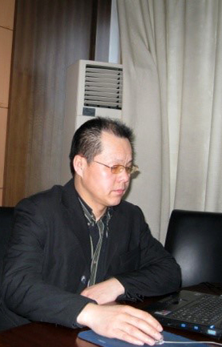

-

课程名称:
课程四：《员工职业化培训》课程主讲:杨永会一、 职业化的本质：1、专业的人做专业的事
2、把游击队打造成正规军
3、非职业化的五种表现
4、缺乏职业化是中国企业走向世界的最大障碍
5、职业化的常规指标
二、职业化的三大构成：良好的专业，良好的态度，良好的形象
三、良好的专业1、专业化是现代职业人士的基础，同时也是职业化的本质
2、搞好职业生涯规划是实现专业化和职业化的前提。
3、职业生涯规划的24字方针：
企业需要，能者不多，我最擅长。
精于此道，以此为生， 我最喜欢
4、职业生涯规划的五个阶段
5、专业化基础上的关联化是实现职业化的重要途径
6、专业化和职业化的目标就是使自己成为一个不可替代的人，最终形成独特的个人品牌。
7、提高职业收入的的核心秘密
四、良好的态度1、规范化是职业化的最主要表现，
而自我约束是实现规范化的内在要求。
2、由社会人转化为职业人是职业化的外在表现。
3、首先职业化，然后个性化。
4、职业化须经历的人生三次转变
5、学会合作，融入团队，是实现职业化的必然要求。
6、任何一种职业都可以成为实现成功人生的桥梁。
7、积极主动，保持激情，是实现良好职业化的最重要条件
8、良好的心态是职业化的最好表现
9、工作时千万不要把我当成人
10、关于职业化心态的十个要点
11、影响职业化的八种负面情绪
五、良好的形象1、人可貌相，是现代市场经济社会的最重要特点
2、形象的改变会带来心态的改变
3、统一规范的职业形象是实现职业化的最简单途径。
4、内在的品质是保持良好的职业化形象的根本措施。
5、每一名员工都代表着企业的形象，每一名员工都是企业对外传播的一个窗口
6、塑造良好的职业形象是为了最终打造成功的企业品牌。
六、职业化的核心总结
职业化的本质是专业化，职业化的基础是规范化，职业化的目标是品牌化
作业：按照职业化的标准，我们的员工，目前存在的最大问题是什么

 回顶部
回顶部
杨永会老师 版权所有